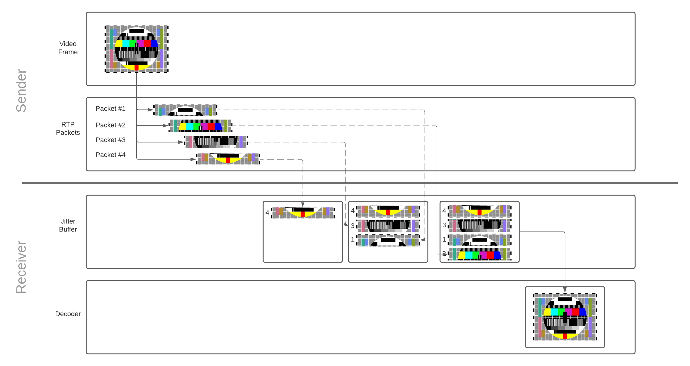

实时网络
为什么网络在实时通信中如此重要？
网络是实时通信中的限制因素。在理想的世界中，我们将拥有无限的带宽，并且数据包会即时到达。但事实并非如此。网络是受限的，且其限定条件随时可能更改。测量和观察网络状况也是一个难题。根据你所使用的硬件，软件及其配置，你可能看到不同的表现。
实时通信也带来了其他大多数领域中不存在的问题。对于网站开发人员来说，如果你的网站在某些网络上运行速度较慢，那不是致命问题。只要所有数据到达，用户都会感到满意。但对于 WebRTC，如果你的数据延迟了，那就没用了。没有人在乎 5 秒钟前的电话会议中所说过的话。因此，在开发一个实时通信系统时，必须作出权衡。我的时间限制是多少，可以发送多少数据？
本章介绍了适用于数据和媒体通信的概念。在后面的章节中，我们将超出理论范围，讨论一下 WebRTC 的媒体和数据子系统如何解决这些问题。
网络的哪些属性让它很难 ?
在所有网络上都能有效工作的代码很复杂。你会面对许多不同的因素，它们都可以相互影响。这些是开发人员将遇到的最常见问题。
带宽
带宽是可以在给定路径上传输的最大数据速率。请记住，它不是一个静态数字，这一点很重要。带宽会随着使用者的增多（或减少）而改变。
传输时间和往返时间
传输时间指的是一个数据包需要多长时间到达。像带宽一样，这不是恒定的。传输时间随时可能波动。
传输时间 = 接收时间 - 发送时间
要计算传输时间，你需要将发送方和接收方的时钟以毫秒级精度同步。 即使一个很小的偏差也会导致传输时间的测量结果不可靠。 由于 WebRTC 在高度异构的环境中运行，因此依靠主机之间完美的时间同步（来测量传输时间）几乎是不可能的。
往返时间测量是对不完美的时钟同步的一种解决方法。
（要测量往返时间，）WebRTC peer 不使用分布式时钟，而是发送一个特殊数据包，携带名为 sendertime1 的自己的时间戳。
合作的 peer 接收到这个特殊数据包后，会将时间戳返还给发送方。
当原始发送方获得返还的时间戳时，它会用当前时间 sendertime2 减去 sendertime1 时间戳。
得到的时间差称为 " 往返传播延迟（round-trip propagation delay）"，或者就使用更常见的 " 往返时间 "。
rtt（往返时间） = sendertime2 - sendertime1
一般认为，往返时间的一半可以用来较好地近似传输时间。 但此解决方法并非没有缺点。 它假设发送和接收数据包花费的时间是相等的。 但是，在蜂窝网络上，发送和接收操作可能不是时间对称的。 你可能已经注意到了，手机上的上传速度几乎总是低于下载速度。
传输时间 = rtt（往返时间）/2
关于往返时间测量的技术，在RTCP 的发送方和接收方报告章节中有更详细的描述。
抖动
抖动是每个数据包的传输时间可能会有所不同的现实表现。你的数据包可能会延迟，但随后会突然大量集中到达。
数据包丢失
数据包丢失是指消息在传输中丢失。数据损失率可能是稳定的，也可能出现波峰和波谷。 这可能是由于网络类型的原因造成的，例如卫星或 Wi-Fi 等。或者也可能是传输路径上的软件导致的。
最大传输单位（MTU）
最大传输单位指的是单个数据包大小的限制。网络不允许你发送一个巨大的消息。在协议级别，消息可能必须被拆分为多个较小的数据包。
根据你采用的网络路径，MTU 也将有所不同。你可以使用MTU 路径发现之类的协议来确定可以发送的最大数据包大小。
拥塞
拥塞是指网络达到极限时的情况。这通常是因为你已达到当前路由可以处理的峰值带宽。或者可能是运营商对你的 ISP 配置导致，比如限制了每小时的流量。
拥塞会以多种不同的方式展现出来。没有标准化的表现。在大多数情况下，当拥塞发生时，网络将丢弃多余的数据包。在其他一些情况下，网络将缓存数据包。这将导致数据包的传输时间增加。随着网络的拥塞，你还会看到更多的抖动。这是一个快速变化的领域，并且还有其他用于拥塞检测的新算法目前仍在编写中。
动态变化
网络是动态的，各种状况可能会迅速变化。在通话过程中，你可能会发送和接收数十万个数据包。 这些数据包可能经过多个跃点。这些跃点可能由数百万其他用户共享。即使在你的本地网络中，你也可能正在下载高清电影，或者可能有设备正要下载软件更新。
保证通话质量不能仅仅是在启动时简单的度量你的网络。你需要持续不断的评估。还需要处理来自于多种网络硬件和软件的所有不同表现。
解决数据包丢失问题
处理数据包损失是需要解决的首要问题。有多种解决方法，每种方法都有自己的优势。这取决于你要发送的内容以及对延迟的容忍度。同样重要的一点是，并非所有数据包丢失都是致命的。丢失一些视频可能不是什么问题，人眼甚至可能无法感觉到。但丢掉用户的短信就是不可接受的了。
假设你发送了 10 个数据包，而数据包 5 和 6 丢失了。下面是一些解决问题的方法。
确认（Acknowledgments）
确认是指接收方收到每个数据包时，都去通知发送方。如果发送方收到一个数据包的两次确认消息，且该数据包不是最终数据包时，发送方就会意识到有数据包已经丢失。例如，当发送方两次收到数据包 4 的 ACK 消息时，它就知道接收方没有收到数据包 5。
选择性确认（Selective Acknowledgments）
选择性确认是对确认的改进。接收方可以发送一个 SACK 消息来确认多个数据包已经收到，并通知发送者间隔时间。
例如，发送方可能收到一个包含数据包 4 和 7 的 SACK 消息。这样它就知道需要重新发送数据包 5 和 6。
否定应答（Negative Acknowledgments）
否定应答以相反的方式解决了问题。接收方并不通知发送方自己已经收到了什么，而是通知发送方丢失了什么。在我们的例子里，将为数据包 5 和 6 发送一个 NACK。发送方仅知道接收方希望再次发送的数据包。
前向纠错（FEC）
前向纠错可以抢先解决丢包问题。发送方将发送冗余数据，这意味着部分数据包丢失不会影响最终流。一种流行的算法是 Reed–Solomon 纠错算法。
这减少了发送和处理确认的延迟 / 复杂度。如果你所在的网络的损耗为零，则前向纠错会浪费带宽。
解决抖动问题
大多数网络都存在抖动。即使在局域网内部，你也有许多设备以变化的速率发送数据。你可以通过运行 ping 命令对其他设备执行 ping 操作，并注意往返延迟的波动，从而轻松地观察到抖动。
要解决抖动问题，客户端使用 JitterBuffer。JitterBuffer 确保数据包的稳定传递时间。不利的一面是，JitterBuffer 为提前到达的数据包增加了一些延迟。好处是延迟的数据包不会引起抖动。想象一下，在通话期间，你可能会看到类似下面这样的数据包到达时间。
* time=1.46 ms
* time=1.93 ms
* time=1.57 ms
* time=1.55 ms
* time=1.54 ms
* time=1.72 ms
* time=1.45 ms
* time=1.73 ms
* time=1.80 ms
在这个例子里，1.8ms 左右将是一个不错的选择。较晚到达的数据包将使用我们的延迟窗口。较早到达的数据包将被延后一点，并可以填充由较晚的数据包耗尽的延迟窗口。这意味着我们不会再陷入无数据包可用的困境，从而为客户提供顺畅的传输率。
JitterBuffer（抖动缓冲区）操作

每个数据包到达时，将立即被添加到抖动缓冲区。 一旦有了足够的数据包来重建帧，组成该帧的数据包将被从缓冲区中释放出来，并发给解码器进行解码。 解码器按顺序进行解码，并在用户屏幕上绘制视频帧。 由于抖动缓冲区的容量是有限的，因此在缓冲区中停放时间过长的数据包将被丢弃。
关于视频帧是如何转换为 RTP 数据包，以及为何需要重建视频帧的知识，你可以在媒体通信章节中读到更多。
jitterBufferDelay（抖动缓冲延迟）为了解你的网络性能及其对播放平滑度的影响提供了一个很好的视角。
它是WebRTC 统计 API中的一部分，与接收方的入站流有关。
该延迟定义了视频帧在被发给解码器之前在 JitterBuffer 中所花费的时间。
较长的抖动缓冲延迟，意味着你的网络处于高度拥塞状态。
检测拥塞问题
在我们解决拥塞问题之前，我们需要先检测到拥塞。为了检测到它，我们使用拥塞控制器。这是一个复杂的主题，并且仍在迅速变化中。 一些新算法仍在持续被发布和测试。总的来看，它们都以相同的方式运行。即是说，拥塞控制器在给定某些输入的情况下提供带宽估计值。 这里是一些可能的输入：
- 数据包丢失 - 随着网络逐渐变得拥塞，数据包开始被丢弃。
- 抖动 - 随着网络设备变得越来越过载，将导致数据包排队时间变得不稳定。
- 封包往返时间（RTT） - 拥塞时，数据包将需要更长的时间才能到达。与抖动不同的是，往返时间是持续增加的。
- 显式拥塞通知（ECN） - 较新的网络可能会将数据包标记为有拥塞造成丢失的风险，这样可以缓解拥塞。
这些值需要在通话期间持续不断的测量。网络的利用率可能会增加或减少，因此可用带宽可能会不断变化。
解决拥塞问题
现在我们有了一个估计的带宽值，我们需要调整发送的内容。如何调整取决于我们要发送的数据类型。
降低发送速度
限制发送数据的速度是防止拥塞的第一个解决方案。拥塞控制器为你提供了带宽的估计值，发送方有责任对发送速率进行限制。
这是适用于大多数数据通信的方法。对于像 TCP 这样的协议，这全部由操作系统完成，并且对用户和开发人员都是完全透明的。
减少发送的数据
在某些情况下，我们可以发送更少的信息来满足我们的限制。对于数据的到达时间，我们可能有严格的限制，因此我们发送速度不能太慢。这些是实时媒体所受的限制。
如果我们没有足够的可用带宽，我们可以降低发送的视频质量。这要求你的视频编码器和拥塞控制器之间存在紧密的反馈回路。